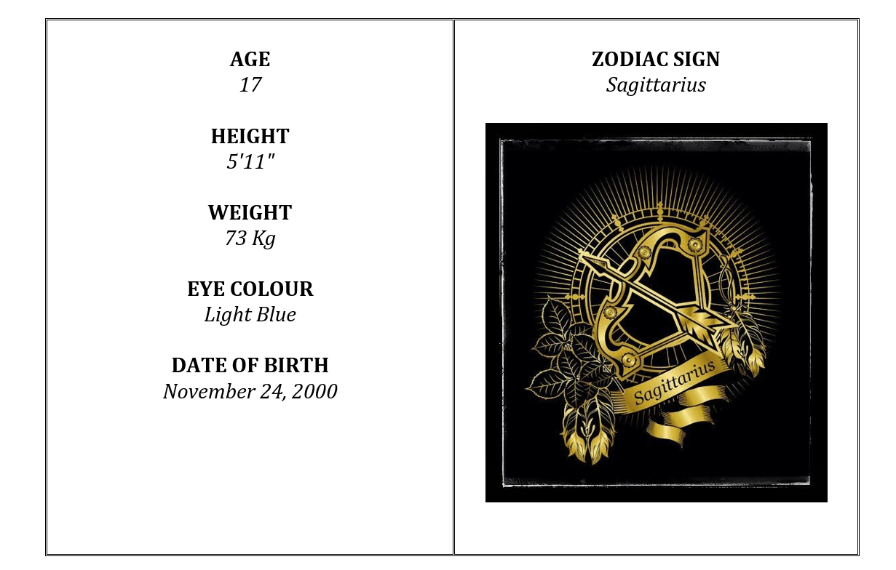
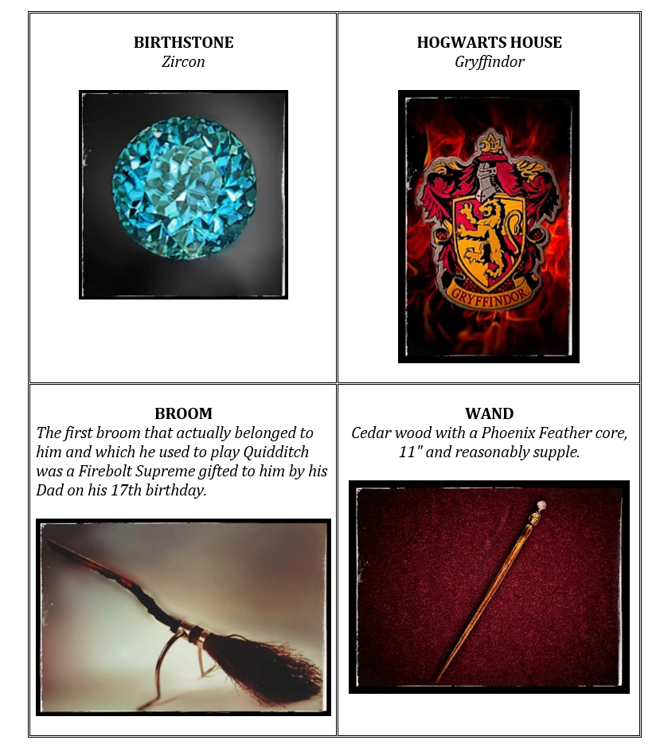
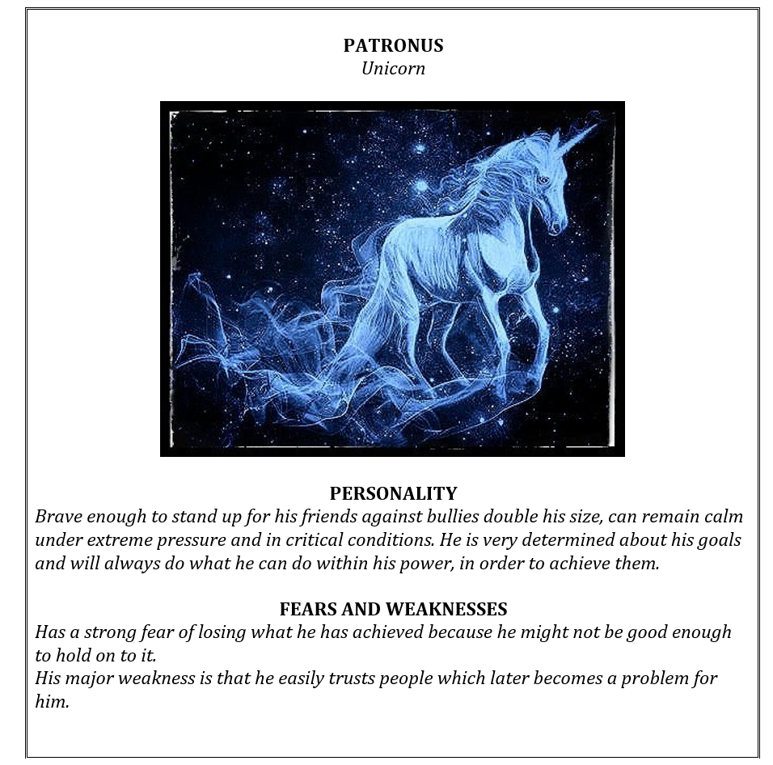
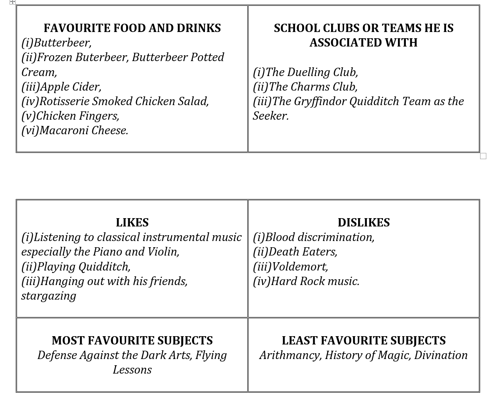
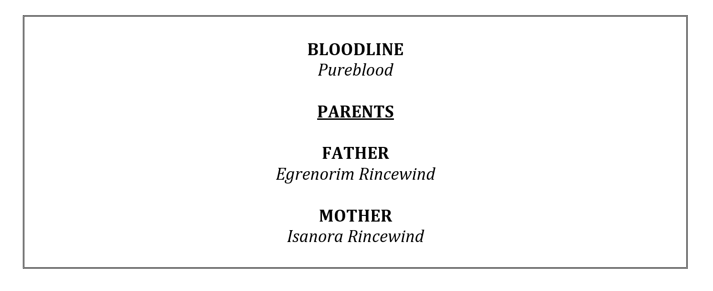
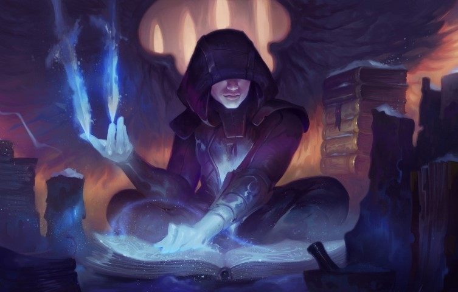

Elravius Rincewind
Author: Dibyarup Nath
Category: Wizarding World
Original Character
"The day you figure out why your true friends are, who they are, you will never again trust the wrong people in life."





BACKGROUND
The one and only son of Egrenorim and Isanora Rincewind and heir to the great Rincewind bloodline.
His father Egrenorim like his grandfather Evaharad Rincewind is a Legendary Auror.
His mother Isanora Ricewind is one of the top reporters for the Daily Prophet.
Although Elravius has a keen interest in the subject of Defense Against the Dark Arts he wants to become a Quidditch player when he is older. However being a 16 year old his choice could change in the future.
